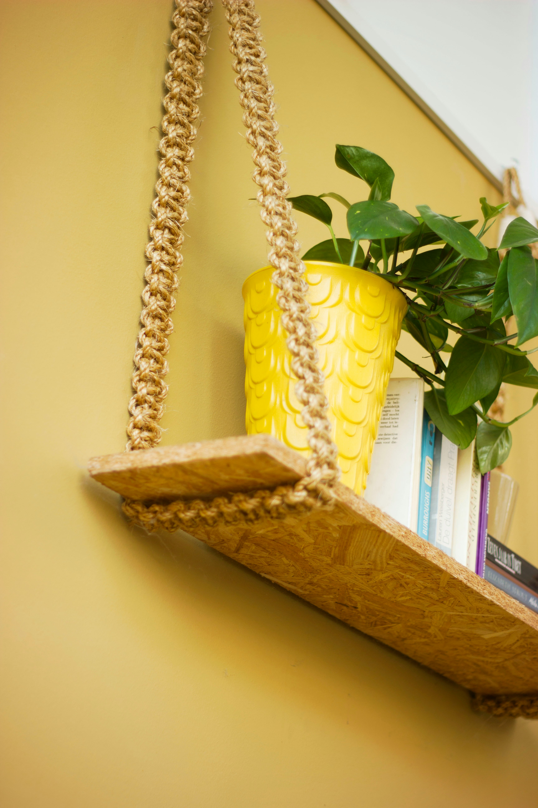
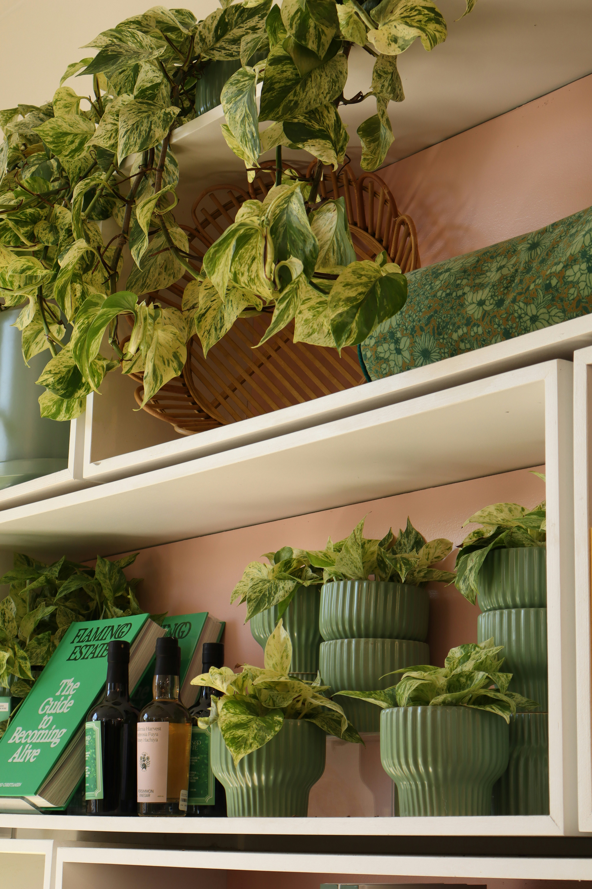
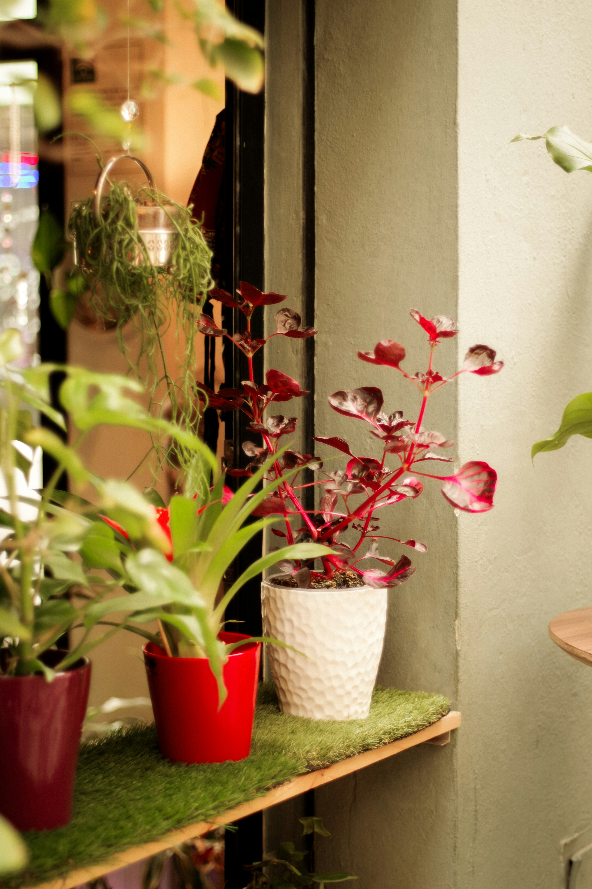

Drainage matters.
Pots with drainage holes let excess water escape, reducing the risk of waterlogged roots. If your favorite decorative pot has no holes, use it as a cover pot with a removable nursery pot inside.
ROOT & ROOM • PLANT CARE ESSENTIALS
The right planter does more than look pretty. From drainage and materials to finding the perfect size, here's how to choose a pot that helps your houseplants feel right at home.
Explore our planter picks →


BEFORE YOU BUY
A beautiful pot is always a plus, but a few practical details can make a big difference in how your plants grow.
Pots with drainage holes let excess water escape, reducing the risk of waterlogged roots. If your favorite decorative pot has no holes, use it as a cover pot with a removable nursery pot inside.
Bigger isn't always better. When repotting, choose a container only slightly larger than your plant's current root system. Too much extra soil can stay wet longer than your plant needs.
Terracotta allows soil to dry more quickly, while plastic and glazed ceramic retain moisture longer. The best choice depends on your plant, your home, and your watering habits.
THE ROOT & ROOM EDIT
Different plants and spaces call for different pots. Here are a few options worth considering, from everyday essentials to decorative upgrades.
As an Amazon Associate I earn from qualifying purchases. Some links on this page are affiliate links, which means Root & Room may earn a commission at no additional cost to you.
BEGINNER-FRIENDLY PICK
Starting your houseplant collection? This affordable set includes five different pot sizes, drainage holes, and matching saucers. The lightweight plastic makes these a practical option for repotting small and medium-sized indoor plants.
Good to know: Empty excess water from the saucers after watering, and choose a pot size that suits your plant's root system.
View on Amazon →DECORATIVE PICK
Looking for something a little more decorative? This fluted ceramic planter set offers a classic, understated look that works beautifully with different interior styles.
The set includes three planter sizes, making it an option for displaying established houseplants in different areas of your home.
Good to know: Ceramic planters are generally heavier than plastic. Check the product's drainage details and measurements before choosing a pot for your plant.
View on Amazon →SELF-WATERING PICK
Looking for a different approach to watering? This self-watering planter set is designed with built-in water reservoirs that allow plants to draw up moisture as needed.
A convenient option to consider for moisture-loving houseplants, particularly if you prefer a watering routine that doesn't require checking the soil quite as frequently.
Good to know: Self-watering pots aren't ideal for every plant. Check the reservoir regularly, follow the product's setup instructions, and avoid keeping drought-tolerant plants constantly wet.
View on Amazon →FIND YOUR FIT
The best planter isn't always the prettiest or most expensive. It's the one that works for your plant's needs and your everyday routine.
You're building your first plant collection, want something lightweight, or prefer an affordable option that's easy to move around.
You want a decorative finish or a heavier pot for added stability. Just remember that drainage and the type of ceramic finish matter, too.
You're growing plants that appreciate consistent moisture and want a reservoir-based watering system. These pots still require monitoring and aren't suitable for every species.